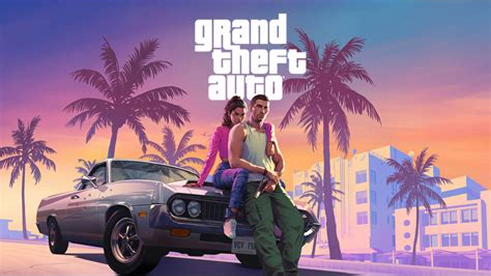
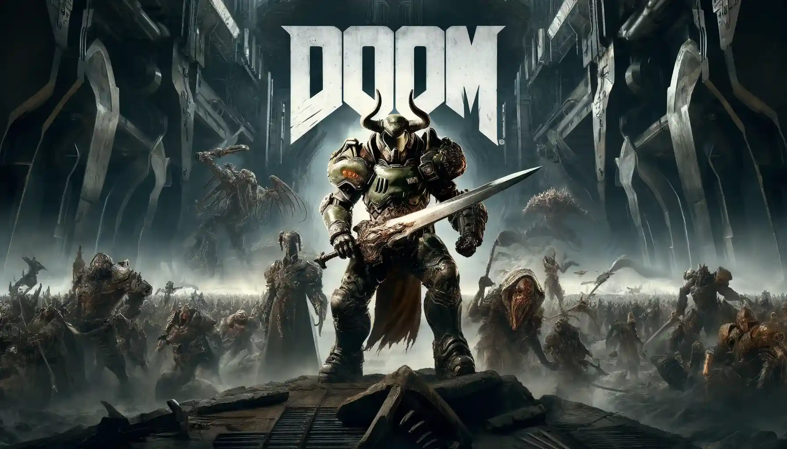

Lançamentos de Jogos em 2025
Lançamentos de Jogos em 2025
O ano de 2025 promete ser cheio de novos lançamentos no mundo dos videogames. Confira alguns dos jogos mais aguardados:
Principais Lançamentos
| Jogo |
Data de Lançamento |
Plataformas |
Gênero |
| GTA 6 |
A definir |
PS5 e Xbox Series X|S |
Ação |
| Doom: The Dark Ages |
A definir |
PS5, Xbox Series X|S, PC |
Ação/aventura |
| Assassin's Creed Shadows |
14 de fevereiro |
PS5, Xbox Series X|S, PC |
Ação/aventura |
- Grand Theft Auto VI

A Rockstar Games promete retomar a franquia GTA em 2025, com o sexto título da linha principal, que traz um casal de criminosos como protagonistas, sem contar os gráficos com tecnologias muito bem trabalhadas.
- Assassin's Creed Shadows

Levando a franquia da Ubsoft para o Japão pela primeira vez, Assassin's Creed Shadows é um dos mundos abertos mais aguardados de 2024 e traz dois protagonistas jogáveis: Yasuke e Naoe.
- Doom: The Dark Ages

Outro retorno com data marcada é o Doom Slayer, em Doom: The Dark Ages, que quer voltar ás raízes infernais da franquia.
Jogos mais esperados para 2025
Confira alguns os jogos em lançamento para 2025!
Veja mais sobre os lançamentos
Saiba mais sobre o lançamento de novos jogos em IGN
Ir para o topo da página
Voltar ao topo